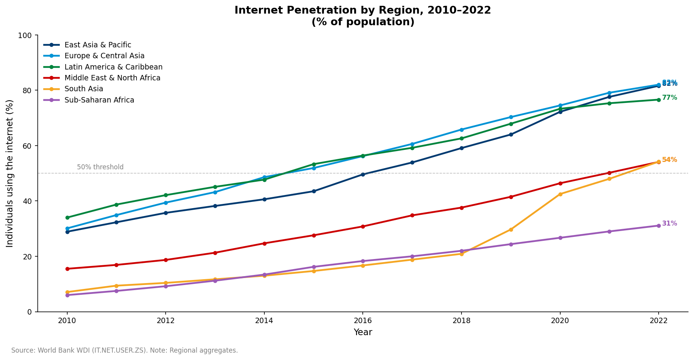
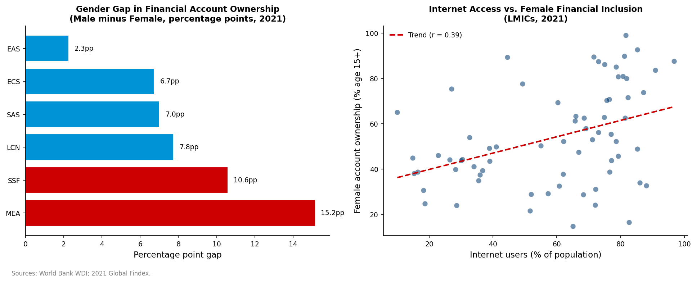
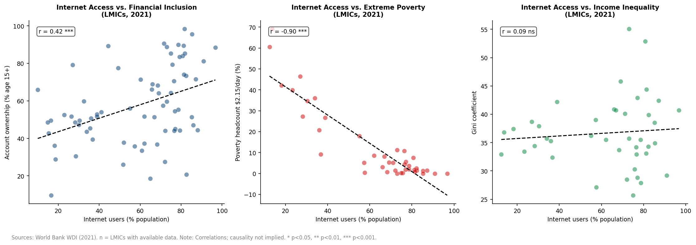

Evidence from World Bank WDI and OECD DAC data on connectivity gaps, gender divides, and the inequality paradox in digital development co-operation.
The SSA region reached only 31% internet penetration in 2022 — remaining below the 50% threshold that represents meaningful population-level access to digital systems. While SSA started at a similar level to South Asia in 2010, it did not experience the same growth spike, likely driven by India's rapid digital expansion and its mass population.
This means that less than 1 in 3 people in SSA can access any digital system. DPI — whether digital ID, payment rails, or data exchange platforms — struggles to be effective when the population cannot connect to it in the first place. Donor investment in DPI in this region must therefore be preceded by targeted connectivity infrastructure, not run in parallel.

MENA presents a striking disconnect: 69.8% internet penetration alongside only 37.6% female financial inclusion — the worst gender gap in the dataset at 15.2 percentage points. The correlation coefficient between internet access and female financial inclusion is r = 0.39, indicating only a moderate relationship.
More internet helps a little, but it is not reliably bringing women into the financial system. Cultural, structural, and policy barriers exist well beyond connectivity. This paradox signals that digital infrastructure programmes which do not address underlying gender inequalities will fail to deliver inclusive outcomes — regardless of how high connectivity rates climb.

The correlation between internet access and the Gini coefficient is r = 0.09 — not statistically significant. This is the most counterintuitive finding in the dataset, and the most important for donors to understand.
When new digital systems roll out, the first to gain access are typically wealthier populations — they have the devices, the connectivity, and the digital literacy to benefit first. Without targeted policies to reach lower-income groups, DPI can widen the gap before it closes it. It is not a matter of simply building digital infrastructure — it must be made truly accessible for everyone. The question is not whether to invest in DPI, but who that investment is designed to serve.

The following recommendations are directed at DAC member donors and the OECD DAC Secretariat, grounded in the findings above and aligned with the G20 DPI Framework (2023) and OECD DAC aid effectiveness principles.
| Source | Dataset | Access |
|---|---|---|
| World Bank WDI | Internet use, financial inclusion, poverty, Gini, maternal mortality | wbgapi Python package |
| OECD DAC CRS | ODA flows to ICT/digital sectors (Sector code 220) | OECD SDMX REST API / DAC 2024 Report |
| World Bank API | Country income group classifications (LIC, LMC, UMC) | REST API |
All quantitative analysis is cross-sectional for 2021 using publicly available data. Correlational findings do not establish causality — endogeneity is a known challenge (wealthier countries tend to have both more internet and better outcomes). Rigorous causal analysis would require panel data with country fixed effects or instrumental variables (e.g., submarine cable landings as IV for internet penetration). All code is available openly on GitHub under an MIT licence.
This policy brief was produced as an independent analytical exercise. The findings and recommendations are the author's own and do not represent the views of the OECD or its member governments. · github.com/angelloaleon/dpi-development-analysis